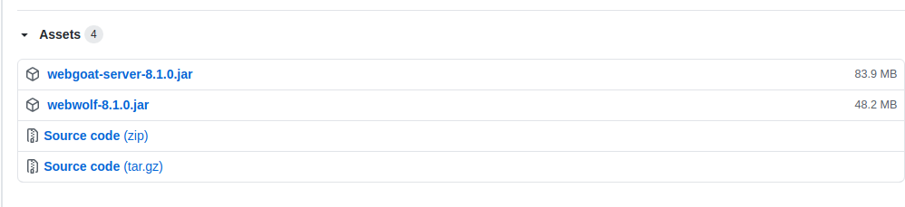
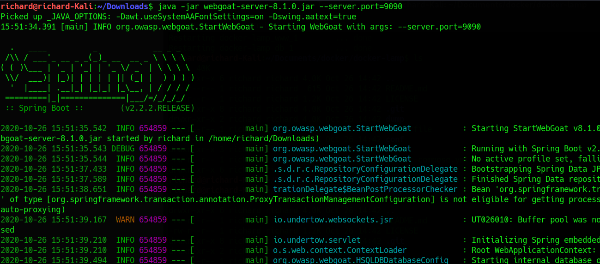
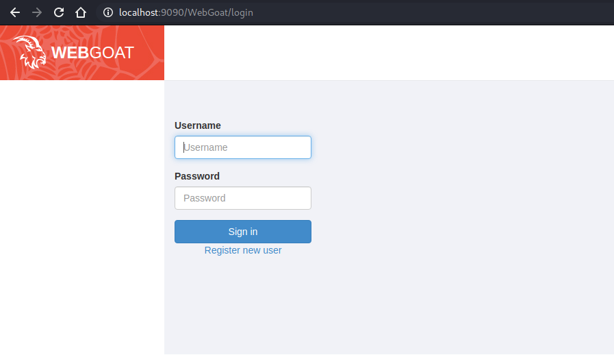
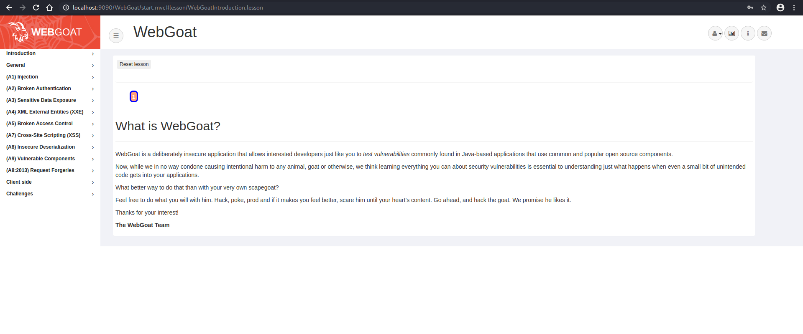

WebGoat安装运行步骤
WebGoat 是一个由OWASP开发和维护的，专为网络应用安全教学所设计的网络应用靶机。 WebGoat中包含了常见的OWASP Top10漏洞的训练页面。对于有意掌握网络应用安全及渗透测试相关技术的用户来说，这是个非常有效的工具。
这篇文章就简单介绍了如何下载，并在本地运行WebGoat。
下载
从WebGoat的Github页面下载最新版。

运行
进入到下载文件的保存目录，执行下述命令：
1 | java -jar webgoat-server-8.1.0.jar --server.port=9090 |

服务器成功开始运行后，在浏览器进入http://localhost:9090/WebGoat页面。就可以看到如下登录界面：

选择注册新用户。注册完成后就可以看到挑战页面：

OK，现在就可以开始挑战了！！冲鸭～
备注
再次多提醒一句，对于这类网络应用的靶机，由于都是有意地设计成存在漏洞，所以千万不要将其暴露在互联网上。 请在一个隔离的环境，进行实验。